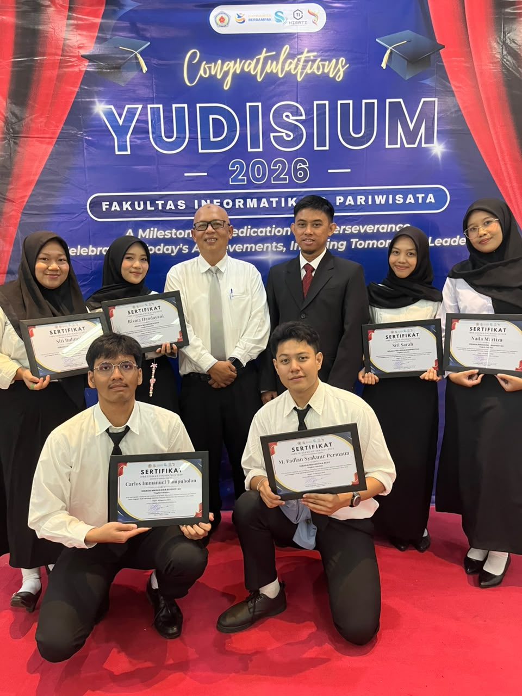

Mahasiswa Teraktif
Mahasiswa Teraktif
Institut Bisnis dan Informatika Kesatuan
- Aktif dalam organisasi Himpunan Mahasiswa.
- Dipercaya menjadi Asisten Dosen untuk membimbing kegiatan praktikum.
- Berperan sebagai Komisaris Tingkat (Komti) dalam mengoordinasikan kegiatan angkatan dan perkuliahan.
